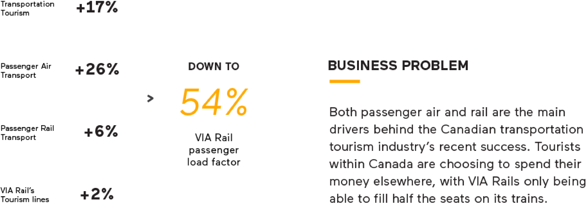
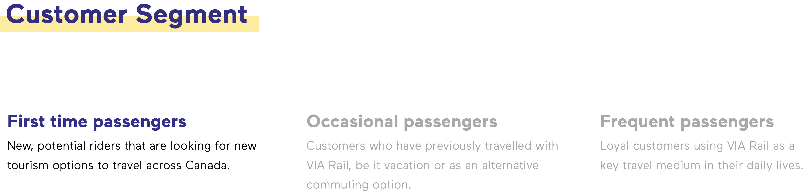
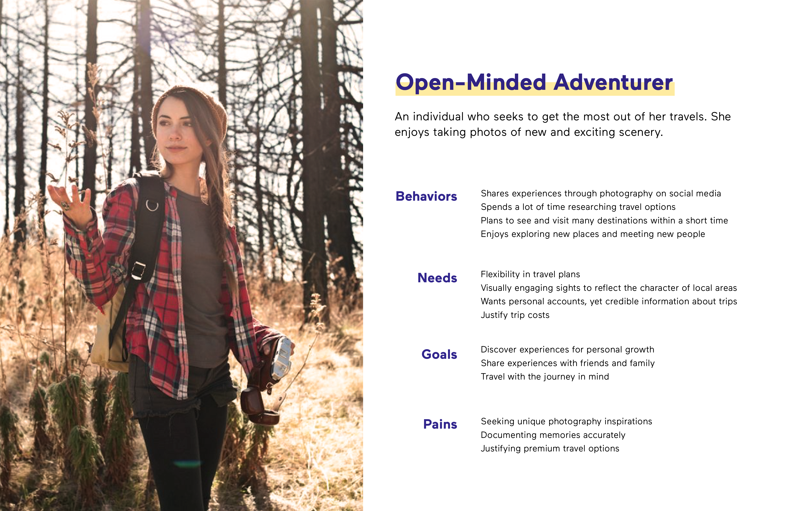
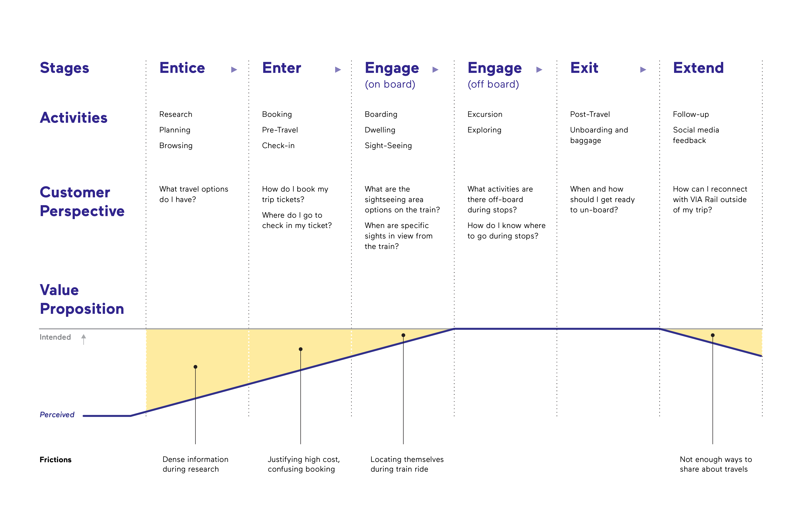
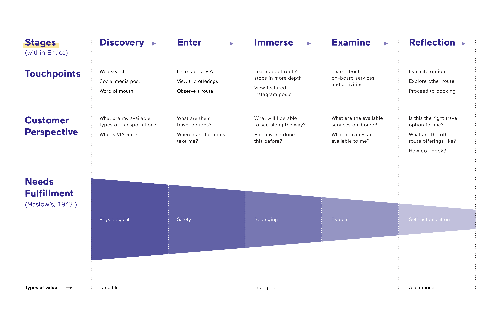
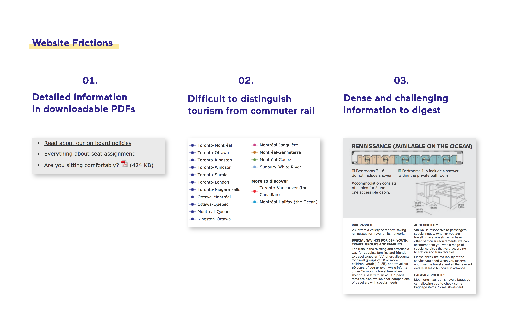

VIA Rail
Overview
VIA Journey is a website redesign that invites tourists to consider VIA Rail as a desirable option for tourism within Canada among other common alternatives. Our goal with VIA Journey was to better entice travellers to discover the value of VIA Rail’s unique journey-based experience, as well as to help VIA Rail re-establish their market positioning and competitive edge in the tourism industry.
My role in this project was mainly focused on market and industry research and analysis, ideation on the project’s form and features, as well as content strategy and writing for our weekly presentation slides and scripts, and video. I also held smaller roles in graphic, UI, and interaction design in the initial weeks of research and ideation.
The Client
About
VIA Rail is the only Canadian passenger rail service that provides both short-haul transportation and long-haul, transcontinental vacation packages, helping as many as 3.97 million passengers travel in 2016 alone.
Business Problem
With the recent surge in demand for Canadian tourism travel, air and rail services are performing well. However, VIA Rail is struggling to fill half of their seats, notably attaining an average passenger load factor of only 54% in 2016 (Annual Report 2016). As well, despite providing Canada’s only coast-to-coast rail service, tourists are still choosing to spend their money on other means of tourism travel as VIA Rail is seeing a trend of stagnating ridership numbers since 2014. Our challenge is to increase the number of riders on VIA Rail as well as influence potential customers to consider VIA RAIL as a desirable travel alternative.
Process
Customer Segment
Looking from a customer’s perspective, our team first identified three customer segments. We chose to focus our efforts toward first-time customers as they are likely to hold preconceived notions about long-haul rail travel and therefore are less likely to see the value proposition that VIA Rail offers.
Persona
Based on anecdotal reviews of VIA Rail, I created a persona to help guide the team in understanding the kind of traveler we are designing for, as well as where in the customer journey framework VIA Rail is finding it most challenging in shifting perception of rail travel.
The Customer Journey
We developed a customer journey framework which was borrowed from Engine Digital’s model. From identifying the stages in the journey framework and the frictions within, we learned the gap between the VIA Rail’s intended value proposition and the customer’s perceived value proposition is greatest within the entice stage.
The Customer Map
Choosing to intervene at the entice stage, we broke this stage down further and realize a close association with Maslow’s Hierarchy of Needs. We understood that when basic needs are met, people are motivated to achieve higher level goals. Our strategy was to therefore organize the value proposition in our digital solution so to present tangible, intangible, and aspirational values in this order as they progress through the entice phase. Upon exploring VIA Rail’s website, we saw a key opportunity in enticing customers.
Frictions
Consumers aren’t realizing VIA Rail’s value proposition due to the current website’s presentation of information: it is difficult to find, digest, and navigate.
We found that the value proposition is better communicated on downloadable PDFs. However, these PDFs contain dense, but useful information that the website does not. Should website visitors not open these PDFs, they would never see the complete value proposition that VIA Rail offers. Should they open these PDFs, the information presented is very dense, diverting people away from accessing this information. Furthermore, it is difficult to distinguish between their long and short-haul services, making it difficult to navigate and see VIA Rail’s differentiator as a provider of long-haul tourism. These friction points create cognitive overhead for consumers, causing VIA Rail to be quickly judged as a pricier and slower provider of transportation.
Proposal
To close the gap between the intended and perceived value proposition, our digital solution, VIA Journey, seeks to highlight the tangible, intangible, and aspirational values being promised and connect potential passengers with a journey that is as valuable as the destination, such that VIA Rail will be considered a desirable option for tourism.
Our Proposed Solution

Landing page
Journey Page
Social Media
Class Offering
Summary
Reflection
From this experience, I learned on a deep level many models, processes, and tools to take with me and apply to future design challenges. What I found to be the most delightful takeaway for myself was being design-driven with a concept in mind. When our team came up with the concept of “the journey being as valuable as the destination”, it changed my view of what a project is: the project is not just a means to create value and fulfill needs, it can have a joyful and memorable character. The uniqueness of the project kept my enthusiasm high and motivated me to find ways to drive the concept home, which I believe came across in the final product. Even well after working on this project, the window metaphor and the micro-interactions used to demonstrate this concept excites me and hopefully would excite website visitors as well. I seek to bring this design-driven approach in future projects.